MAZDA 6 – Przestronne kombi z 2017 roku. Jestem pierwszym właścicielem, kupowałem auto w polskim salonie.
Samochód wyróżnia się eleganckim wykończeniem (lakier Soul Red i czarna skórzana tapicerka) oraz wysokim poziomem bezpieczeństwa, idealny dla rodzin i osób ceniących wygodę.
Użytkowałem to auto rodzinnie, ma jedynie uszkodzenia lakiernicze spowodowane zwykłym korzystaniem. Przez cały czas garażowane.
Bezawaryjny najmocniejszy silnik 2.5 litra (dodatkową dynamikę zapewnia tryb sport). Najwyższa wersja wyposażenia.
Auto całkowicie bezwypadkowe.
Auto serwisowane na bieżąco, do końca przedłużonej gwarancji wyłącznie w ASO. Niedawno zmienione opony (wielosezon) oraz akumulator. W gratisie dorzucam oryginalny bagażnik dachowy Mazda.
ZAPRASZAM DO OBEJRZENIA, JAZDY PRÓBNEJ I ZAKUPU.
KTO PIERWSZY TEN LEPSZY!
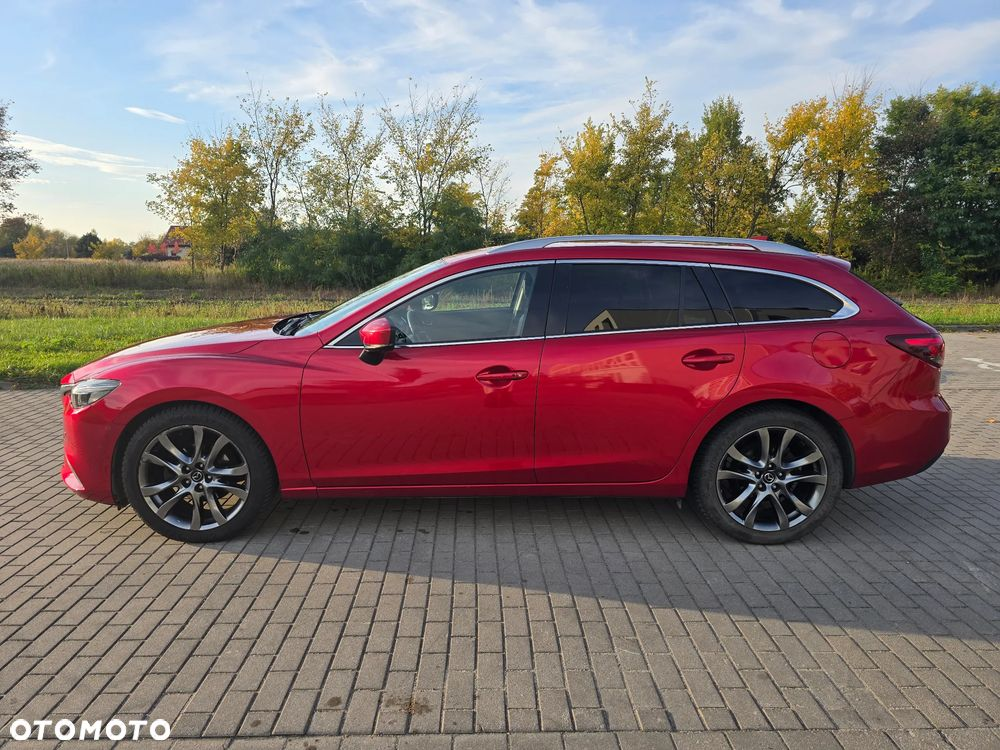
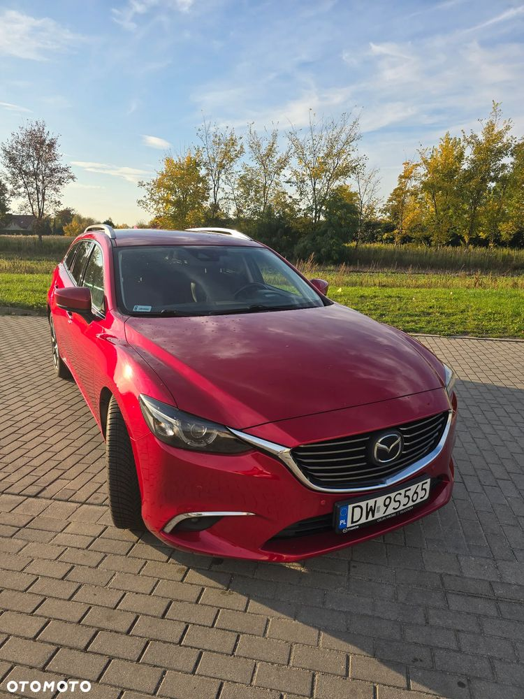
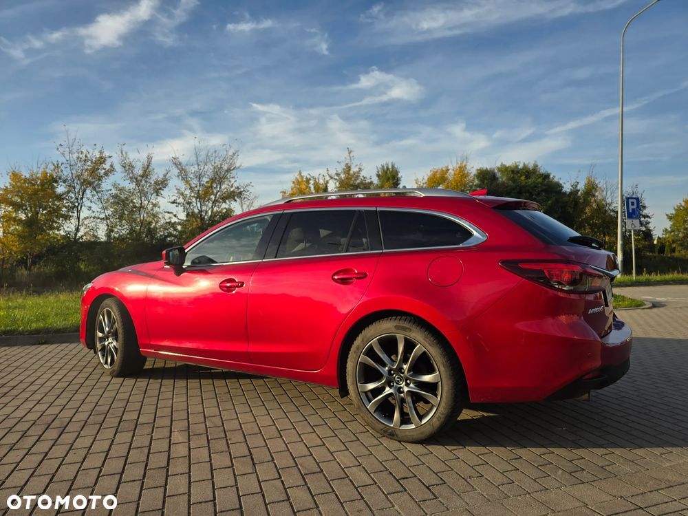
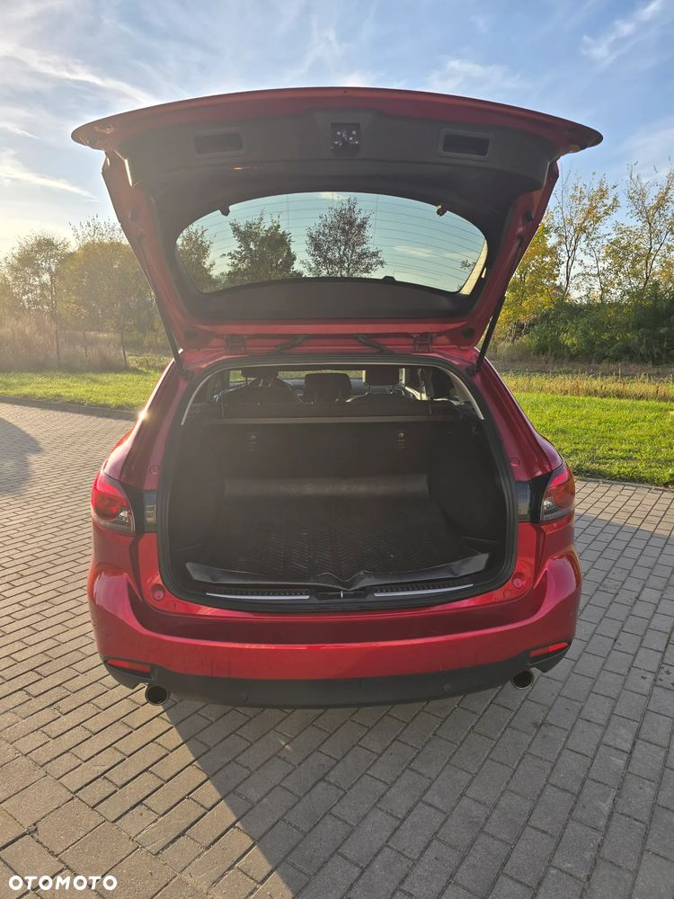
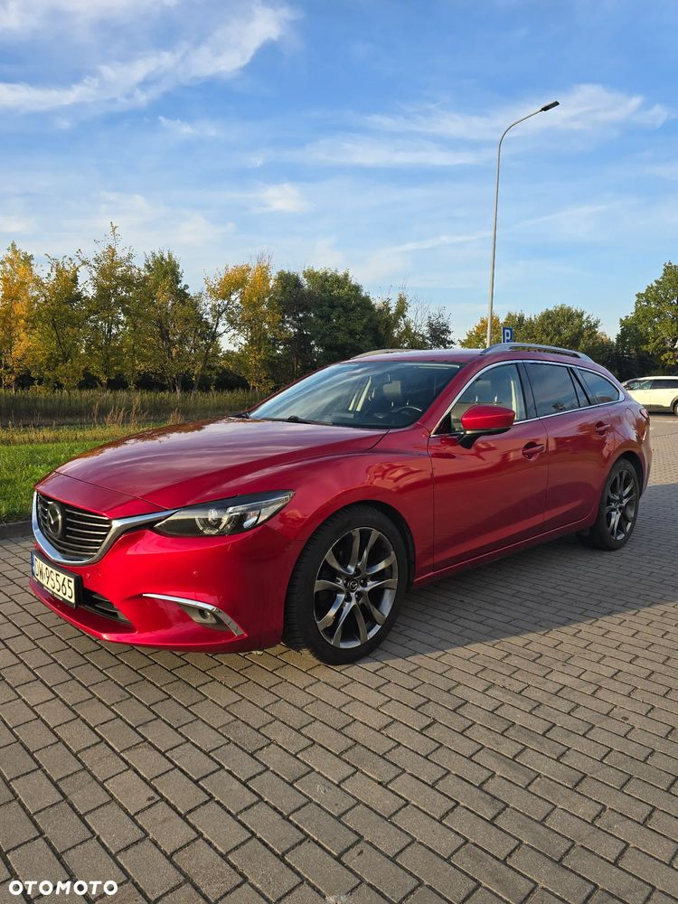
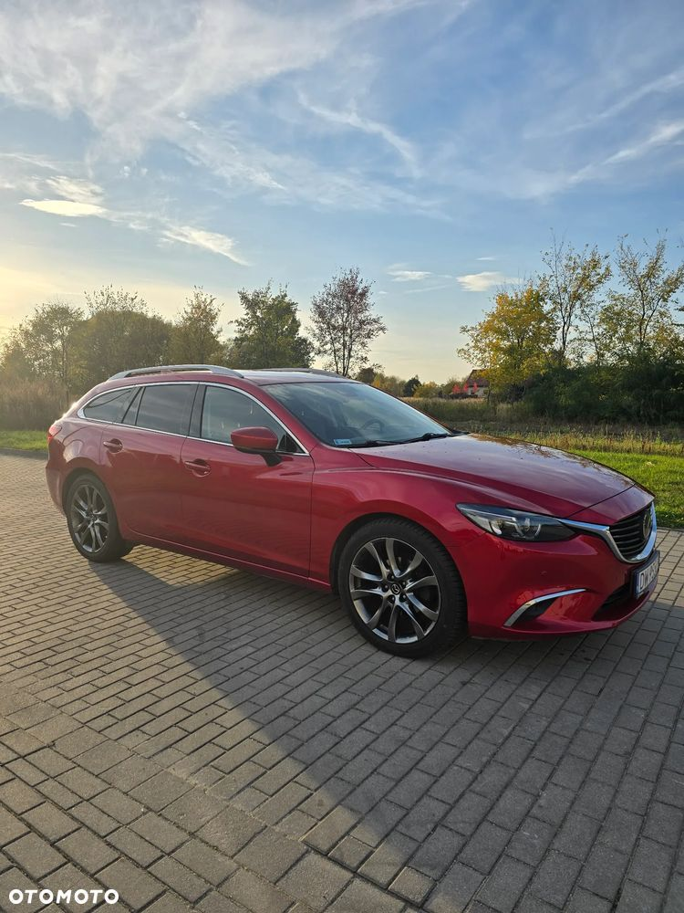

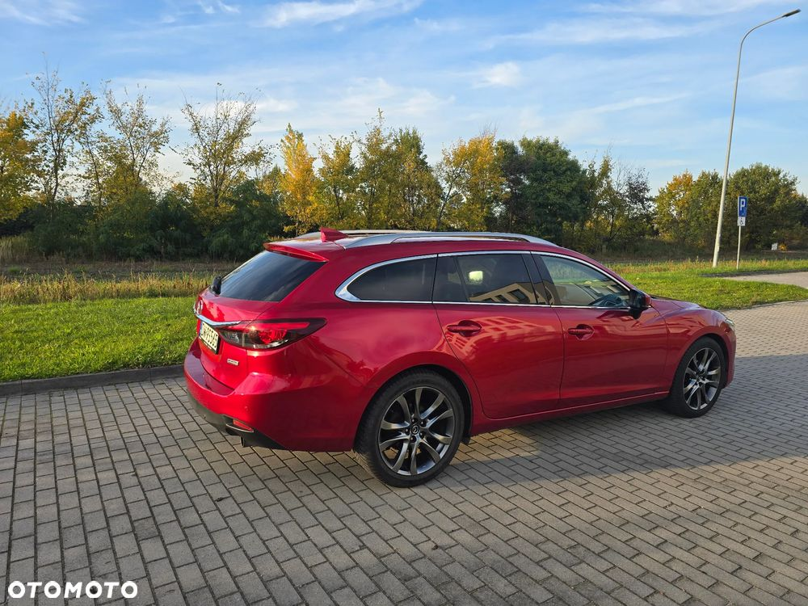
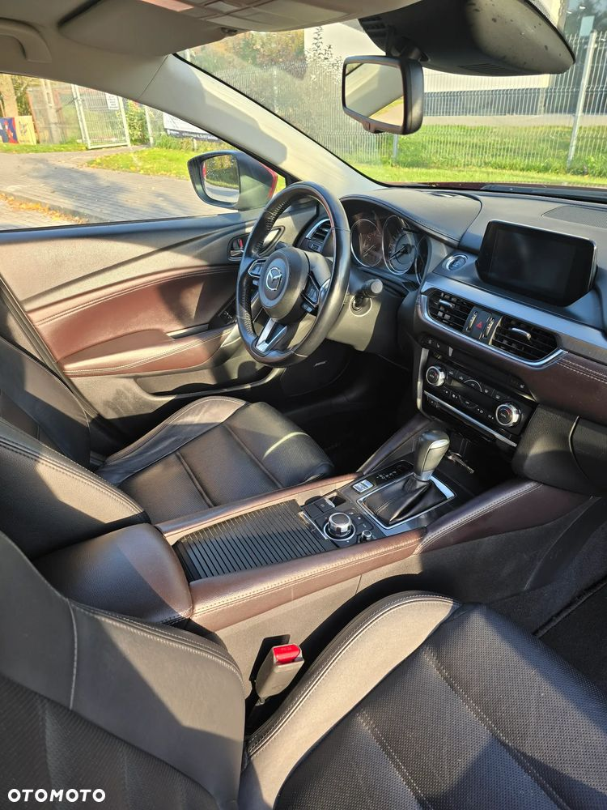
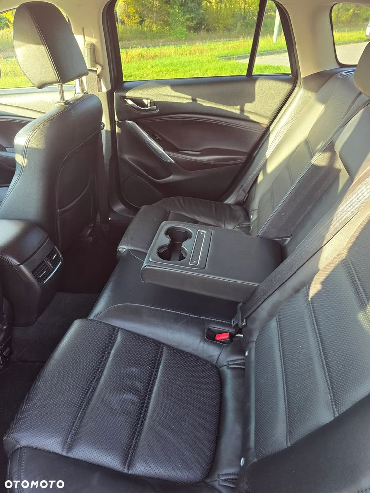
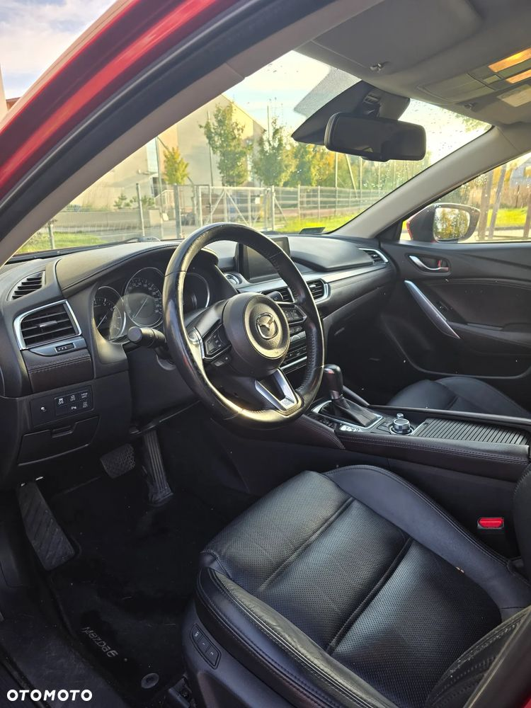
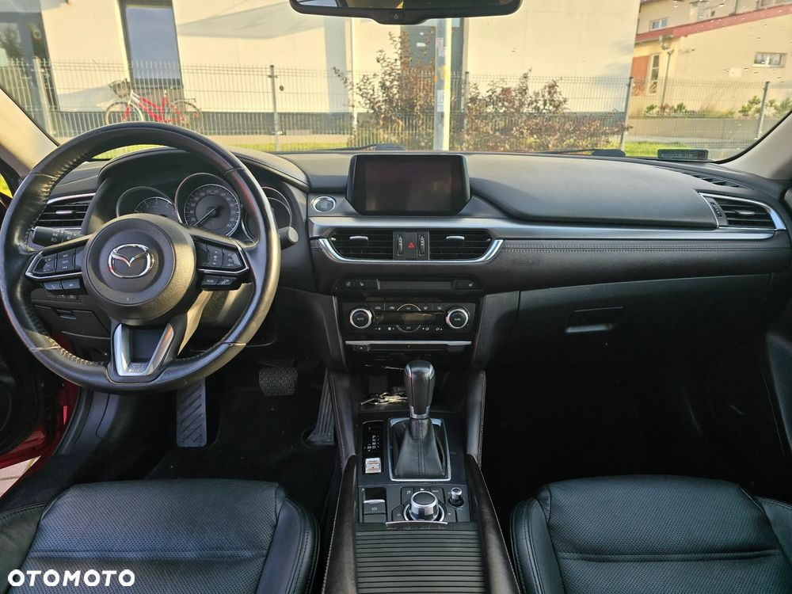